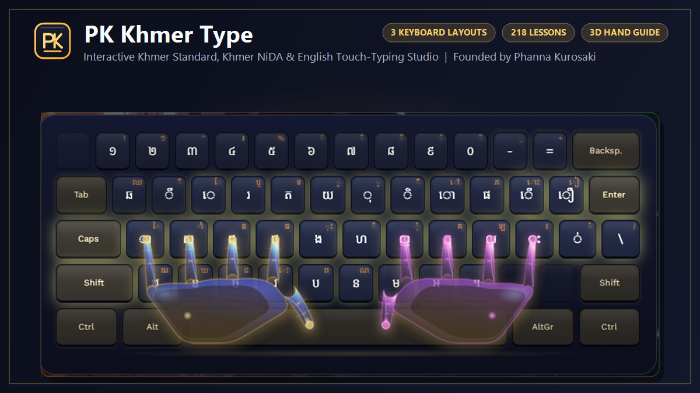

01 LAYOUTS
Learn the map you’ll use.
See Khmer Standard, official Khmer NiDA and English (US) QWERTY as separate layouts. Explore the on-screen keys and their modifier layers before you practise.
Explore the keyboard guide
A typing studio for Khmer & English
A more thoughtful way to learn Khmer typing. Find your keys, follow short guided lessons, and build fluency one practice at a time.
Khmer Standard · Khmer NiDA · English QWERTY

A good place to begin
Explore the real keys, then practise them in the same studio. Start with Khmer Standard, discover the official NiDA layout, or build your English QWERTY touch typing.
Not sure where to start?
Begin with a layout you want to learn.
Try the keys
Switch layouts, choose a layer, then select a key. Each character comes from PK Khmer Type’s actual keyboard map.
The on-screen map reflects the layout data in the typing studio. Blank positions are intentionally left blank.


Built around practice
See Khmer Standard, official Khmer NiDA and English (US) QWERTY as separate layouts. Explore the on-screen keys and their modifier layers before you practise.
Explore the keyboard guideShort exercises introduce a few characters at a time and build into lessons across the keyboard. Choose a track, start with an unlocked lesson, and follow the prompt.
Find your first lessonReview common mistakes with adaptive drills, notice per-key progress, or change the pace in Focus Mode. When you’re ready, take on a timed Temple Trial or a race against an adaptive pacer.
Explore practice in the studioA clear next step
Starting is simple. Choose a track and PK Khmer Type will put the next step in front of you.
Choose your first lessonKhmer Standard, Khmer NiDA or English (US).
Open the lessons and begin with the first unlocked exercise.
Follow the prompt and find each key on the displayed layout.
Review accuracy and exercise feedback when you finish.
Progress through lessons as your skills improve.
Your first few strokes
A short starter drill from the real curriculum. Use your keyboard, or click the highlighted on-screen key. The live feedback below counts only this demo.
Type the characters shown
A fair comparison
Traditional independent practice can suit many learners. Here’s how PK Khmer Type approaches the same parts of learning.
| Learning support | PK Khmer Type | Traditional self-guided practice |
|---|---|---|
| Khmer keyboard layouts | ● Standard & NiDA interactive maps | Depends on the materials you choose |
| English typing practice | ● English (US) QWERTY course | Depends on the materials you choose |
| Structured lessons | ● Progressive exercises | Often self-arranged |
| Adaptive practice | ● Weak-key review & remedial drills | May require manual review |
| Progress feedback | ● Accuracy & per-key progress | Varies with the chosen method |
| Beginner guidance | ● Guided beginner lessons | Varies with the chosen method |
“Traditional self-guided practice” describes common approaches, not a specific product; available tools vary.
Made for learners
Good typing starts with understanding where the keys are. PK Khmer Type brings layouts, progressive lessons, and practice feedback together in one studio, for learners starting from the home row and those refining the way they type.
Build familiarity. Strengthen accuracy. Keep going when it feels right.
One key at a time
Begin with a simple lesson, learn at your own pace, and build your typing skills step by step.